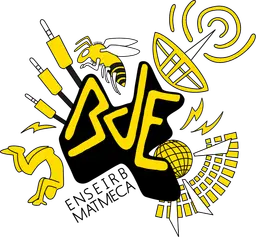
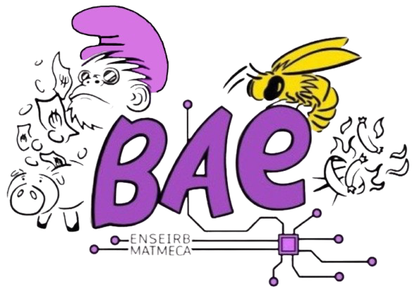
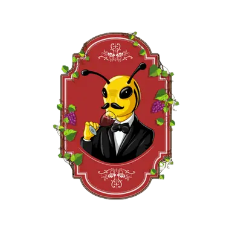
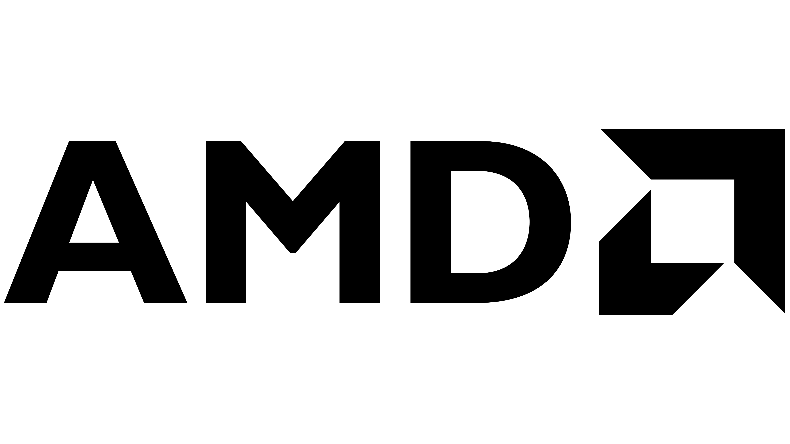
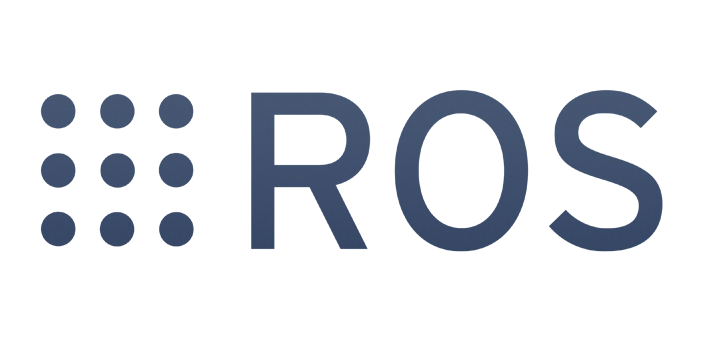
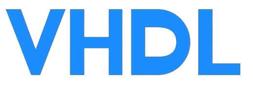
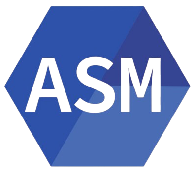
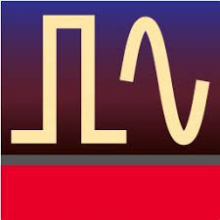

Antoine Neve--Lesbats
Étudiant Alternant à l’ENSEIRB–MATMECA en SEE
Apprenti en 3ème année à Thales Six, Cholet
Je m'appelle Antoine Neve Lesbats et je suis actuellement en troisième année à l'Enseirb Matmeca
au sein de la formation Systèmes Électroniques Embarqués. Je réalise cette formation en apprentissage
à Thales Six à Cholet. Je travaille dans un laboratoire d'intégration et de développement embarqué sur divers équipements radios.
Étudiant dynamique avec un fort esprit d’équipe, cette formation en apprentissage me permet de développer
de nouvelles aptitudes dans le monde professionnel.
De plus, je me suis investi dans diverses associations au sein de mon école. Cet investissement m'a permis de développer certaines compétences notamment en gestion financière
(faire les comptes, anticiper des potentielles entrées et sorties d'argent) et en gestion de contrats (communication, gestion de conflits,
connaissance de certaines règlementations).
Parcours académique
Diplôme d'ingénieur en Systèmes Électroniques Embarqués en alternance
Enseirb-Matmeca : 2023 - 2026
Talence (33) - France
Cours :
- Mathématiques pour l'ingénieur appliquées au traitement de signal.
- Physique : propagation des ondes, semi-conducteurs.
- Automatique : régulation PI, PID, PIDF.
- Programmation : C, C++.
- Sytème d'exploitation UNIX.
- Traitement numérique d'images et vidéos.
- Intelligence artificielle : machine learning, deep learning.
- Robotique embarquée : ros1.
- Capteurs embarqués : Zephyr.
- Introduction aux réseaux : types et architectures.
- Conception conjointe (processeur ARM et FPGA) : SoC.
Projets :
- Conception d'une bataille navale en ligne de commande.
- Simulation d'un système de radiocommunications.
- Conception d'un système de messagerie local entre deux terminaux.
- Conception d'une médiathèque en ligne de commande.
- Conception d'un processeur avec jeu d'instructions.
- Manipulation d'objet avec le bras robotique XARM6.
- Optimisation matérielle et logicielle d’une application de multiplication matricielle sur carte de développement PYNQ-Z2.
- Implémentation d’algorithme « radar » sur FPGA VERSAL, en utilisant les AIE ML
Certifications :
- Obtention du TOEIC avec le niveau C1 : 955/990
DUT Génie Électrique et Informatique Industrielle
IUT de Bordeaux : 2021 - 2023
Gradignan (33) - France
Cours :
- Outils mathématiques et logiciels.
- Électronique analogique et numérique.
- Automatisme : principes de base d'un automate.
- Systèmes embarqués : microcontrôleur.
- Physique appliquée : transfert thermique, ondes, électromagnétisme.
- Informatique : Python, C.
- Électrotechnique : monophasé / triphasé, transformateur, machine à courant continu, conversion AC/DC.
Projets :
- Brassard lumineux pour cycliste.
- Kart télécommandé infrarouge.
- Mini robot combat (ATmega328P).
- Antenne 144 MHz.
Parcours professionnel
Apprenti intégrateur radio
Thales Six : 2023 - 2026
Cholet (49) - France
Première année : étude et analyse d’un framework de test automatisé
- Développement de briques logicielles Python dédiées au pilotage d’équipements de mesure.
- Automatisation de scénarios de test IVVQ dans un environnement réseau sécurisé.
- Mise en œuvre de tunnels SSH (remote port forwarding) pour l’accès distant aux moyens de test.
- Utilisation du standard VISA / PyVISA pour l’abstraction des interfaces de communication.
- Analyse des protocoles réseau et des modèles OSI / TCP-IP.
- Étude architecturale d’un framework de test existant et réalisation de diagrammes UML.
Deuxième année : évolution d’une architecture algorithmique embarquée
- Analyse et compréhension de l’architecture algorithmique existante.
- Conception et formalisation de nouvelles architectures logicielles à l’aide de schémas dédiés.
- Développement logiciel embarqué : création et synchronisation de threads, gestion de la mémoire et des échanges inter-cœurs.
- Mise en œuvre de tests unitaires afin de valider le bon fonctionnement de la nouvelle architecture.
- Réalisation de mesures de charge CPU en temps réel à l’aide d’un logiciel interne.
Troisième année : standardisation de l'intégration et de l'utilisation d'un SoC RF
- Conception d'une architecture logicielle visant à proposer une API générique, abstraite et simple d'utilisation pour l'utilisateur
- Définition d’un mapping mémoire virtuel : association d’une adresse virtuelle à une fonctionnalité.
- Commandes haut niveau orientées fonctionnalité (ex : SetFrequency)
- Commandes bas niveau permettant un accès direct aux registres (ex : WriteRegister)
- A venir...
Technicien de recherche
Université de New-York : 04/2023 - 06/2023
Binghamton (NY) - États-Unis
Algorithme de détection d'armes à feu
- Modification d'une base de données existantes pour ajouter différents angles aux images.
- Réalisation d'un entraînement sur la base de données à l'aide d'algorithmes de détection visuelle.
- Réalisation d'une détection d'objets à l'aide de Python et OpenCV
Hôte de caisse et hôte d'accueil
Leclerc : 04/2022 - 08/2023
Mazères-Lezons (64) - France
Hôte de caisse
- En charge de l'encaissement des clients.
Hôte d'accueil
- En charge de répondre aux divers besoins des clients.
Engagement associatif
Bureau Des Étudiants
Enseirb-Matmeca : 04/2024 - 04/2025
Talence (33) - France

Responsable des partenariats
- Contacter des potentiels partenaires.
- Négocier des contrats.
- Gestion de textiles et de goodies du BDE.
- Gestion des activités organisées par le partenaire.
- Gestion de différents entre le partenaire et le BDE.
- Organisation d'évènnements tel que le week-end d'intégration regroupant 500 personnes.
Bureau Des Alternants Étudiants
Enseirb-Matmeca : 04/2024 - 04/2025
Talence (33) - France

Vice trésorier
- Gestion de la trésorerie de l'association : compte bancaire et caisse.
- Gestion prévisionnelle des achats et ventes pour des évènnements regroupant jusqu'à 400 personnes.
Club Oenologie
Enseirb-Matmeca : 04/2024 - 04/2025
Talence (33) - France

Trésorier
- Gestion de la trésorerie du club.
- Gestion prévisionnelle des évènnements organisés : soirée Bar À Vin, dégustation avec des producteurs, visite de domaines.
Projets


Implémentation d’un traitement radar (FFT) sur AMD Versal AI-ML – Exploitation des AI Engines
Enseirb-Matmeca : Projet industriel de troisième année en collaboration avec Thales AVS
Objectifs du projet
L'objectif de ce projet est d'évaluer et de mettre en oeuvre une chaîne de conception
Matlab ➔ Simulink ➔ AMD Model Composer ➔ Vivado ➔ Vitis afin de déployer
des calculs de FFT d'un algorithme radar sur un FPGA AMD Versal AI-ML
via une carte d'évaluation Alinx VD100.
Ce projet est réalisé en groupe de 3 étudiants dans le cadre du projet semestriel de
troisième année en collaboration avec Thales AVS et se décompose en plusieurs objectifs :
- Installer et valider l’environnement outillé (Matlab/Simulink, Model Composer, Vivado, Vitis) et leurs compatibilités.
- Adapter un modèle Simulink existant pour l’exécution sur AI Engine (AIE-ML) en privilégiant une architecture dataflow/streaming.
- Simuler, valider fonctionnellement puis déployer sur cible Versal (VD100).
- Établir un bilan critique du flow (contraintes, maturité outillage, performances, reproductibilité).
Réalisations
- Prise en main de l’architecture Versal (PS/PL/AIE), NoC et DDR, et compréhension du rôle des AI Engines pour l’accélération.
- Intégration AMD Toolbox dans Simulink : encapsulation de kernels C++ dans des blocs AIE Kernel et paramétrage des interfaces de flux.
- Validation par simulation AIE (fonctionnel + expérimentation du parallélisme sur plusieurs AIE).
- Construction du flow complet :
- Vivado : Block Design (PS/DDR/NoC/AIE/AXI), génération du bitstream et export matériel (.xsa).
- Vitis : System Project (Platform .xpfm, AIE component graph/kernels, HLS mm2s/s2mm, application host via XRT).
- Déploiement sur carte via boot SD (Linux + rootfs + xclbin + application) et visualisation/diagnostic via UART (PuTTY).
- Analyse des difficultés : dépendances versions, documentation VD100/AIE, contraintes mémoire/streaming et adaptation du modèle.
Notions utilisées
- AMD Versal AI-ML : architecture PS/PL/AIE, NoC, DDR, interconnexions AXI.
- AI Engine (AIE) / dataflow : kernels vectoriels, graph AIE, parallélisme, contraintes mémoire et streaming.
- Chaîne outillée : Matlab/Simulink, AMD Model Composer, Vivado (bitstream), Vitis (platform/system, packaging).
- Déploiement embarqué : Linux cible, boot SD, console UART, exécution host et orchestration via XRT.
Résultats
- Validation complète du flow de développement PL + PS + AIE
- Démonstration de la faisabilité d’une accélération FFT sur architecture Versal AI-ML


Manipulation d'objet avec le bras robotique XARM6
Enseirb-Matmeca : Projet de troisième année
Objectifs du projet
L'objectif de ce projet est de concevoir un système ROS capable de détecter, saisir et déplacer des pièces à l’aide du bras robotisé XARM6. Le but est de réaliser une manipulation fiable et autonome permettant de :
- Détecter une pièce à l'aide de la caméra Realsense2
- Saisir correctement cette pièce à l'aide de la pince
- Déposer la pièce sur une cible
Ce projet a été réalisé en groupe de 7 lors de ma deuxième année à l'Enseirb-Matmeca durant le premier semestre. Pour ce projet j'ai été nommé chef de projet et j'ai donc décidé de répartir le travail en trois groupes différents :
- Groupe Contrôleur : ce groupe est en charge de la réalisation de la machine d'état pour le contrôle du robot.
- Groupe Caméra : ce groupe est en charge de la détection de contour et de couleur à l'aide de la camera.
- Groupe Trajectoire : ce groupe est en charge de la réalisation des mouvements du bras robotique.
Notions utilisées
- Classes et objets : définition de types.
- Encapsulation (
public/private/protected) : séparation interface et implémentation. - Constructeurs et destructeurs — initialisation et nettoyage des objets.
- Séparation header et source :
.hpppour interfaces et.cpppour implémentations. - Pointeurs et références : gestion des relations entre objets (passage et stockage).
- ROS1 : réalisation de fichiers launch (roslaunch), utilisation de services (rosservice), utilisation de topics (rostopic).
- Gestion de projet :
- Gestion de versionnage avec git : initialisation du répertoire, gestion de branches, gestion de pull requests.
- Gestion de planning : prévisionnel et réel.
- Points d'avancements avec les différents groupes.
Démonstration
 Dépôt GitHub
Dépôt GitHub
Création d'un site WEB
Projet personnel
Développement d’un site web personnel utilisant HTML et CSS pour mettre en avant mon parcours académique et professionnel, mes projets et activités associatives.
Conception d'une médiathèque en ligne de commande
Enseirb-Matmeca : Projet de deuxième année
Objectifs du projet
L'objectif du projet est de développer une application en C++ permettant la
gestion d'une médiathèque en appliquant les principes de la programmation orientée objet.
L'application doit offrir des fonctionnalités telles que l'ajout, la suppression, la consultation et
la recherche de ressources (livres, CD, DVD, revues, etc.).
Elle permet également la
sauvegarde et le chargement des données, ainsi que la gestion des emprunts et
réservations.
Le projet inclut une extension pour la gestion multi-utilisateurs avec des droits
différenciés entre administrateurs et clients.
Ce projet a été réalisé en groupe de 2
lors de ma deuxième année à l'Enseirb-Matmeca durant le second semestre.
Notions utilisées
- Classes et objets : définition de types.
- Encapsulation (
public/private/protected) : séparation interface et implémentation. - Héritage : classes dérivées.
- Polymorphisme et fonctions virtuelles : appels dynamiques via pointeurs et références de base.
- Classes abstraites et méthodes virtuelles pures : base commune non instanciable.
- Constructeurs et destructeurs — initialisation et nettoyage des objets.
- Séparation header et source :
.hpppour interfaces et.cpppour implémentations. - Pointeurs et références : gestion des relations entre objets (passage et stockage).
- Conteneurs STL : stockage des collections (ressources, utilisateurs).


Conception d'un processeur avec jeu d'instructions
Enseirb-Matmeca : Projet de deuxième année
Objectifs du projet
L'objectif de ce projet est de concevoir un processeur simple
en VHDL avec un jeu d'instructions basique. Le processeur doit être capable
d'exécuter des instructions arithmétiques, logiques et de contrôle de flux.
Le projet inclut la conception de l'unité de contrôle, de l'unité arithmétique et logique (ALU),
des registres et de la mémoire.
Une interface de test doit également être développée pour
simuler et valider le fonctionnement du processeur.
Ce projet a été réalisé en groupe de 2
lors de ma deuxième année à l'Enseirb-Matmeca durant le second semestre.
Notions utilisées
- Conception matérielle en VHDL : description du matériel.
- Architecture de processeur : composants et organisation.
- Jeu d'instructions : opérations supportées.
- Unité de contrôle : gestion du flux d'instructions.
- Unité arithmétique et logique (ALU) : opérations arithmétiques et logiques.
- Registres et mémoire : stockage des données et instructions.
- Simulation et test : validation du fonctionnement.

Simulation d'un système de radiocommunications
Enseirb-Matmeca : Projet de deuxième année
Objectifs du projet
Le projet a pour objectif d’initier à la simulation d’un système
d'émission-réception de télécommunication mettant en œuvre une modulation QPSK.
La chaîne est constituée de composants RF prédéfinis (amplificateurs, mélangeurs,
modulateurs, filtres, oscillateurs, antennes, canal de propagation…)
Ce projet a été réalisé individuellement lors de ma deuxième année à
l'Enseirb-Matmeca durant le premier semestre.
Notions utilisées
- Modulation QPSK (Quadrature Phase Shift Keying)
- Filtre en racine de cosinus surélevé (Raised Cosine Filter)
- Chaîne RF émission–réception
- Mélangeur RF / IF (Mixer)
- Amplificateur de puissance (PA) et amplificateur faible bruit (LNA)
- Non-linéarité et point de compression 1 dB (P1dB)
- Canal de propagation GSM (pertes, atténuation, déphasage, retard)
- Constellation et diagramme de l’œil
- Taux d’erreur binaire (BER)

Conception d'une bataille navale en ligne de commande
Enseirb-Matmeca : Projet de première année
Objectifs du projet
L'objectif de ce projet est de concevoir une battaille navale
dans un terminal afin de pouvoir jouer contre un ordinateur.
Le projet doit permettre l'affichage d'une grille de jeu, l'affichage
des bateaux, les points de vies de chacun des bateaux, le status de chacun des
bateaux et le nombre de bateaux restant.
Ce projet a été réalisé en groupe de 3
lors de ma première année à l'Enseirb-Matmeca durant le premier semestre.
Notions utilisées du langage C
- Manipulation de tableaux d'entiers.
- Manipulation de chaînes de caractères.
- Manipulation de nombres et de leur représentation.
- Manipulation de pointeurs.
- Manipulation de structures.